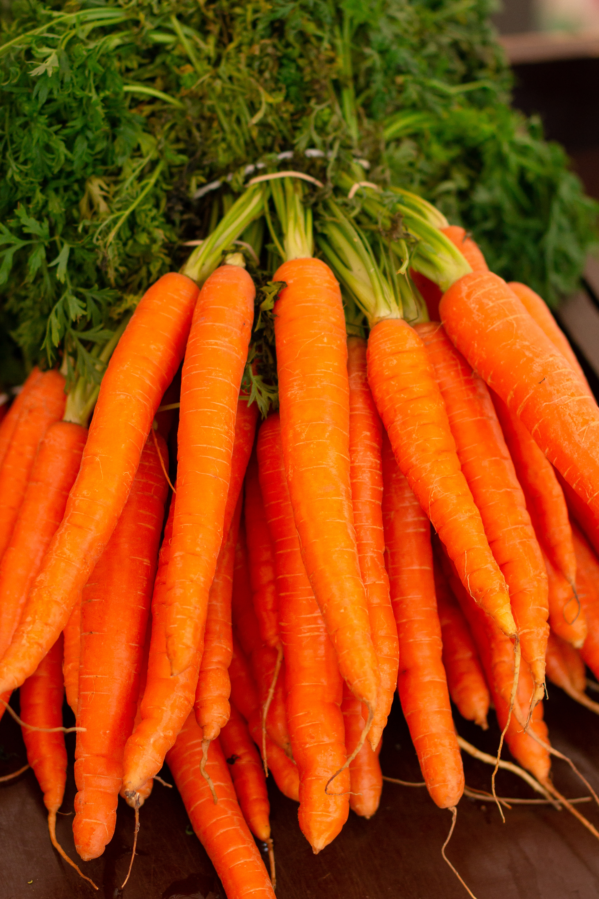

About Carrots
Carrots are root vegetables known for their bright orange color and sweet flavor. They are rich in vitamins, particularly vitamin A, and are a healthy addition to various dishes. Carrots come in different varieties, including orange, purple, red, and yellow.
Steps to Grow Carrots
- Choose a location with loose, well-drained soil for carrot cultivation.
- Plant carrot seeds directly in the garden or use seedlings if transplanting.
- Sow the seeds in rows, ensuring proper spacing between plants.
- Water the carrots consistently, keeping the soil evenly moist but not waterlogged.
- Thin the seedlings as they grow to avoid overcrowding and promote healthy development.
- Provide adequate sunlight, as carrots prefer full sun for optimal growth.
- Harvest carrots when they reach a suitable size, usually around 60-80 days after planting.
Extra Information
Carrots are not only delicious but also nutritious. They can be eaten raw, cooked, or juiced. In addition to their high vitamin A content, carrots contain antioxidants and are beneficial for eye health. Explore different carrot varieties and recipes to enjoy the versatility of this popular vegetable.